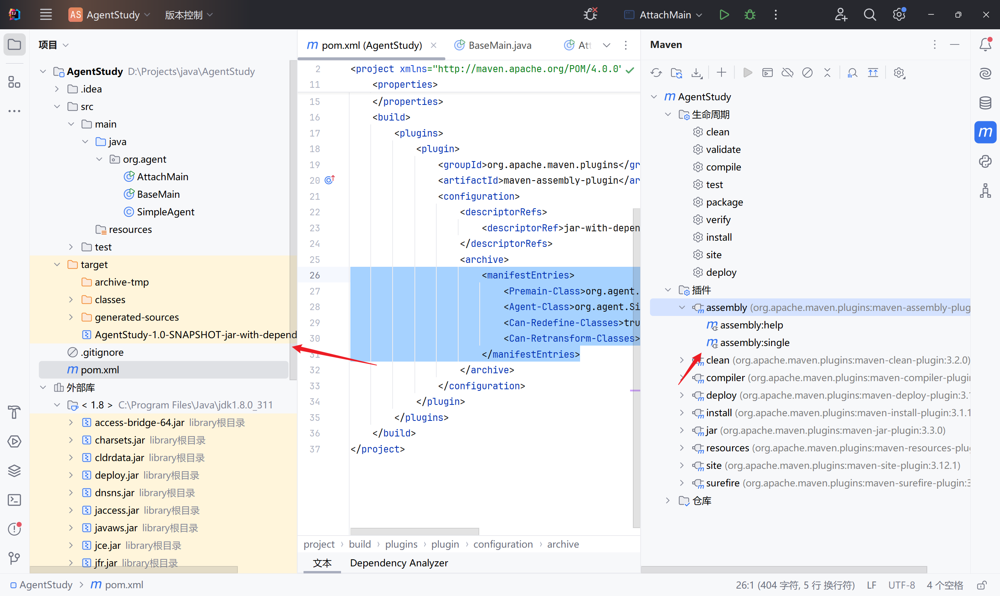
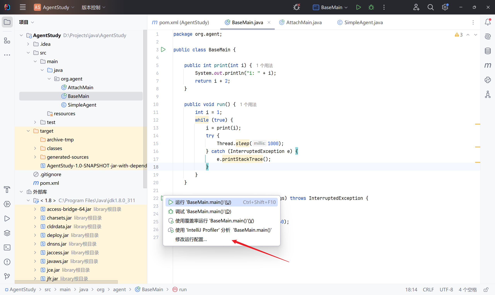
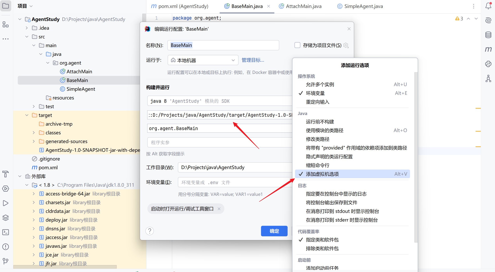
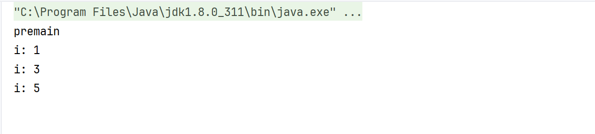
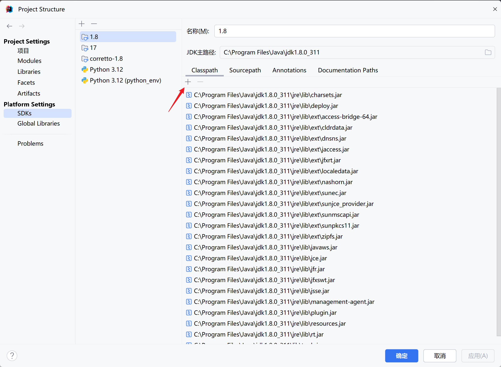
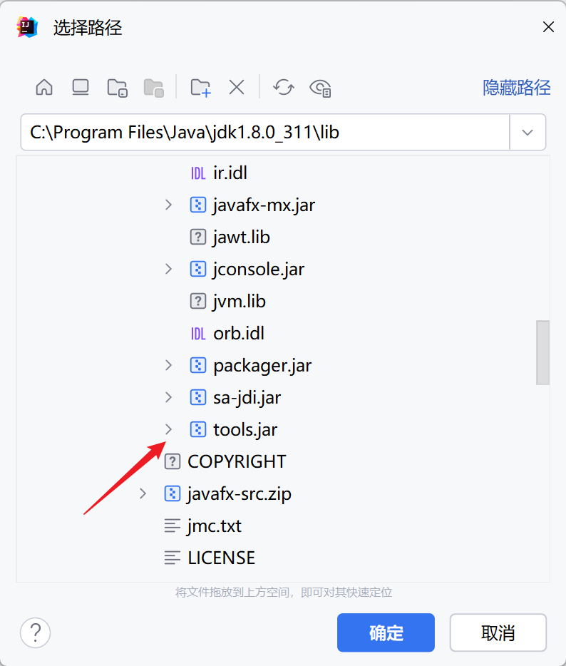
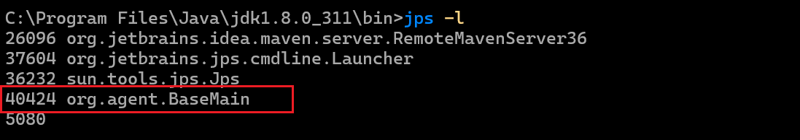
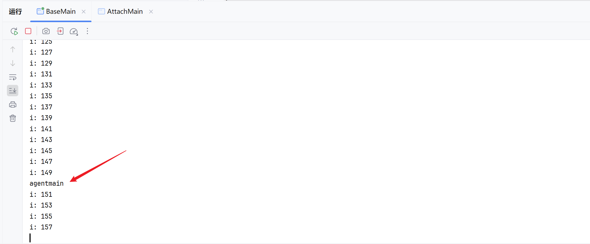
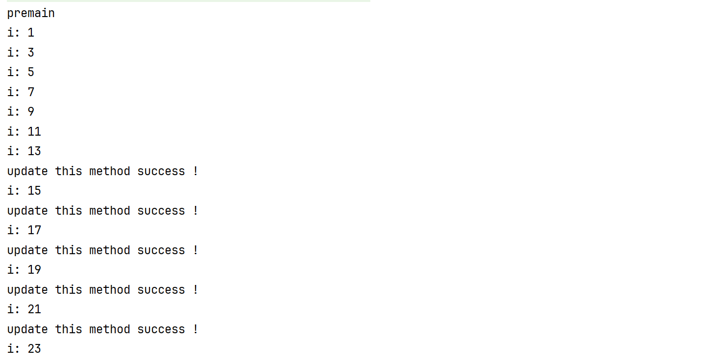

Java Agent 内存马
- date
- 2023-09-10 12:08:13
介绍
Java是一种静态强类型语言，在运行之前必须将其编译成.class字节码，然后再交给JVM处理运行。
Java Agent 就是一种能在不影响正常编译的前提下，修改 Java 字节码，进而动态地修改已加载或未加载的类、属性和方法的技术。
agent 主要分为两种：
- jvm 参数启动：实现 premain 方法，在 JVM 启动前加载
- attach 附加启动：实现 agentmain 方法，在 JVM 启动后加载
premain 和 agentmain 函数声明如下，拥有 Instrumentation inst 参数的方法优先级更高：
| public static void agentmain(String agentArgs, Instrumentation inst) {
...
}
public static void agentmain(String agentArgs) {
...
}
public static void premain(String agentArgs, Instrumentation inst) {
...
}
public static void premain(String agentArgs) {
...
}
|
而 agent 内存马就是使用 attach 的方式，实现在程序运行中去注入内存马。
与其他内存马不同的是，它不仅仅可以在反序列化、JNDI 等代码执行的漏洞环境下去注入内存马，还能够在命令注入等情况下实现。
环境搭建
jdk 版本：1.8
agent程序
| package org.agent;
import java.lang.instrument.Instrumentation;
public class SimpleAgent {
/**
* jvm 参数形式启动，运行此方法
*
* @param agentArgs
* @param inst
*/
public static void premain(String agentArgs, Instrumentation inst) {
System.out.println("premain");
}
/**
* 动态 attach 方式启动，运行此方法
*
* @param agentArgs
* @param inst
*/
public static void agentmain(String agentArgs, Instrumentation inst) {
System.out.println("agentmain");
}
}
|
premain 和 agentmain
编译为 jar 包，这里使用插件。在 pom.xml 中添加：
| <build>
<plugins>
<plugin>
<groupId>org.apache.maven.plugins</groupId>
<artifactId>maven-assembly-plugin</artifactId>
<configuration>
<descriptorRefs>
<descriptorRef>jar-with-dependencies</descriptorRef>
</descriptorRefs>
<archive>
<manifestEntries>
<!-- 这里写 agent 类 -->
<Premain-Class>org.agent.SimpleAgent</Premain-Class>
<Agent-Class>org.agent.SimpleAgent</Agent-Class>
<Can-Redefine-Classes>true</Can-Redefine-Classes>
<Can-Retransform-Classes>true</Can-Retransform-Classes>
</manifestEntries>
</archive>
</configuration>
<!-- 好像是插件的目标, 如果报错删掉即可 -->
<executions>
<execution>
<goals>
<goal>attached</goal>
</goals>
<phase>package</phase>
</execution>
</executions>
</plugin>
</plugins>
</build>
|
然后使用 maven 直接构建：

测试程序
| package org.agent;
public class BaseMain {
public int print(int i) {
System.out.println("i: " + i);
return i + 2;
}
public void run() {
int i = 1;
while (true) {
i = print(i);
try {
Thread.sleep(1000);
} catch (InterruptedException e) {
e.printStackTrace();
}
}
}
public static void main(String[] args) throws InterruptedException {
BaseMain main = new BaseMain();
main.run();
Thread.sleep(1000 * 60 * 60);
}
}
|
jvm 启动前加载
启动程序的时候指定 javaagent 的 jar 路径，然后在主程序启动前就会运行 premain 方法：
| -javaagent:D:/Projects/java/AgentStudy/target/AgentStudy-1.0-SNAPSHOT-jar-with-dependencies.jar
|
IDEA 操作：


启动程序，可以看到在主程序运行前先运行了 premain：

attach 启动后加载
官方为了实现启动后加载，提供了Attach API。Attach API 很简单，只有 2 个主要的类，都在 com.sun.tools.attach 包里面。这里需要先导入一下这个 tools 包：


| package org.agent;
import com.sun.tools.attach.AgentInitializationException;
import com.sun.tools.attach.AgentLoadException;
import com.sun.tools.attach.AttachNotSupportedException;
import com.sun.tools.attach.VirtualMachine;
import java.io.IOException;
public class AttachMain {
public static void main(String[] args)
throws IOException, AgentLoadException, AgentInitializationException, AttachNotSupportedException {
// 根据 PID 连接到主程序的 JVM
VirtualMachine vm = VirtualMachine.attach("40424");
// 加载 agent
vm.loadAgent("D:/Projects/java/AgentStudy/target/AgentStudy-1.0-SNAPSHOT-jar-with-dependencies.jar");
}
}
|
查看 PID 号：


VirtualMachine 还有其他方法：
| public abstract class VirtualMachine {
// 获得当前所有的JVM列表
public static List<VirtualMachineDescriptor> list() { ... }
// 根据pid连接到JVM
public static VirtualMachine attach(String id) { ... }
// 断开连接
public abstract void detach() {}
// 加载agent，agentmain方法靠的就是这个方法
public void loadAgent(String agent) { ... }
}
|
可以借此实现一个遍历，然后去获取到目标 JVM 的 PID 后加载 agent ：
| package org.agent;
import com.sun.tools.attach.*;
import java.io.IOException;
import java.util.List;
public class AttachMain {
public static void main(String[] args)
throws IOException, AgentLoadException, AgentInitializationException, AttachNotSupportedException, javassist.NotFoundException {
// 1. 获得当前所有的 JVM 列表
List<VirtualMachineDescriptor> virtualMachineDescriptorList = VirtualMachine.list();
for (VirtualMachineDescriptor virtualMachineDescriptor : virtualMachineDescriptorList) {
// 2. 遍历获取目标 JVM
if (virtualMachineDescriptor.displayName().contains("org.agent.BaseMain")) {
// 3. 连接到 JVM
VirtualMachine virtualMachine = VirtualMachine.attach(virtualMachineDescriptor.id());
// 4. 加载 agent
virtualMachine.loadAgent("D:/Projects/java/AgentStudy/target/AgentStudy-1.0-SNAPSHOT-jar-with-dependencies.jar");
// 5. 断开连接
virtualMachine.detach();
System.out.printf("Loaded agent %s Success !", virtualMachineDescriptor.displayName());
break;
}
}
}
}
|
agent 修改 JVM 指定方法
上面的 attach 已经可以实现获取目标 JVM 的 PID 然后去加载 agent 程序，那么 agent 程序该如何去注入内存马？
注入内存马其实就是去修改当前 JVM 中的指定类的指定方法，那么流程就是：
- 获取到指定类
- 获取到指定方法
- 修改方法
修改方法能实现了，那么内存马只是去修改对应环境的请求处理方法，给它加一个命令执行或者启动逻辑就好了。
这个就需要用到 Instrumentation 和 javassist 了。
Instrumentation
Instrumentation 是 JVMTIAgent（JVM Tool Interface Agent）的一部分，Java agent 通过这个类和目标 JVM 进行交互，从而达到修改数据的效果。
就是这里的参数：
| agentmain(String agentArgs, Instrumentation inst)
|
| public interface Instrumentation {
// 增加一个 Class 文件的转换器，转换器用于改变 Class 二进制流的数据，参数 canRetransform 设置是否允许重新转换。
void addTransformer(ClassFileTransformer transformer, boolean canRetransform);
// 在类加载之前，重新定义 Class 文件，ClassDefinition 表示对一个类新的定义，如果在类加载之后，需要使用 retransformClasses 方法重新定义。addTransformer方法配置之后，后续的类加载都会被Transformer拦截。对于已经加载过的类，可以执行retransformClasses来重新触发这个Transformer的拦截。类加载的字节码被修改后，除非再次被retransform，否则不会恢复。
void addTransformer(ClassFileTransformer transformer);
// 删除一个类转换器
boolean removeTransformer(ClassFileTransformer transformer);
// 在类加载之后，重新定义 Class。这个很重要，该方法是1.6 之后加入的，事实上，该方法是 update 了一个类。
void retransformClasses(Class<?>... classes) throws UnmodifiableClassException;
// 判断一个类是否被修改
boolean isModifiableClass(Class<?> theClass);
// 获取目标已经加载的类。
Class[] getAllLoadedClasses();
// 获取一个对象的大小
long getObjectSize(Object objectToSize);
}
|
通过 Instrumentation 我们可以做到：
- getAllLoadedClasses() 获取所有加载的类
- addTransformer(ClassFileTransformer transformer, boolean canRetransform) 增加一个转换器
- retransformClasses(Class<?>... classes) 重新加载类
agent ：
| public static void agentmain(String agentArgs, Instrumentation inst) throws UnmodifiableClassException {
// 1. 获取所有类
Class[] allLoadedClasses = inst.getAllLoadedClasses();
String targetClassName = "org.agent.BaseMain";
for (Class cls : allLoadedClasses) {
// 2. 获取到目标类
if (!cls.getName().equals(targetClassName)) {
continue;
}
// 3. 添加一个 transformer
inst.addTransformer(new AgentTransformer(), true);
// 4. 重载该类
inst.retransformClasses(cls);
}
}
|
然后实现这个 ClassFileTransformer transformer：
| package org.agent;
import java.lang.instrument.ClassFileTransformer;
import java.lang.instrument.IllegalClassFormatException;
import java.security.ProtectionDomain;
public class AgentTransformer implements ClassFileTransformer {
@Override
public byte[] transform(ClassLoader loader, String className, Class<?> classBeingRedefined, ProtectionDomain protectionDomain, byte[] classfileBuffer) throws IllegalClassFormatException {
// 转换器操作, 对该类进行修改
return new byte[0];
}
}
|
现在还差的就是 transformer 转换器中去实现修改指定类方法的功能了，这个就需要用到 javassist 去动态修改字节码。
javassist 动态修改字节码
先在 pom.xml 中添加相关依赖：
| <dependencies>
<dependency>
<groupId>org.javassist</groupId>
<artifactId>javassist</artifactId>
<version>3.20.0-GA</version>
</dependency>
</dependencies>
|
CtClass 对象提供了一些方法可以去直接修改目标类。也就可以通过该对象去实现内存马注入。
该对象必须从 ClassPool 对象获取，它就是一个 CtClass 对象容器，然后通过 ClassPool 的 get 方法获取到对应类的 CtClass 对象（ 查找对应的类文件，然后封装为 CtClass 对象 ）。
如果程序运行在 JBoss 或者 Tomcat 等 Web 服务器上，ClassPool 可能无法找到用户的类，因为 Web 服务器使用多个类加载器作为系统类加载器。在这种情况下，ClassPool 必须添加额外的类搜索路径，
| // 获取 ctClass 对象容器
ClassPool cp = ClassPool.getDefault();
// 获取到指定类名的 ctClass 对象
CtClass ctClass = cp.get("org.agent.BaseMain");
// 添加额外的搜索路径
cp.insertClassPath(new ClassClassPath(<Class>));
// 获取到指定方法
CtMethod ctMethod= ctClass.getDeclaredMethod(MethodName)
// 使用 CtMethod 的方法去做修改
|
| public final class CtMethod extends CtBehavior {
}
// 父类 CtBehavior
public abstract class CtBehavior extends CtMember {
// 设置方法体
public void setBody(String src);
// 插入在方法体最前面
public void insertBefore(String src);
// 插入在方法体最后面
public void insertAfter(String src);
// 在方法体的某一行插入内容
public int insertAt(int lineNum, String src);
}
|
修改实现
把着上面两种手段结合起来：
- getAllLoadedClasses() 获取所有加载的类
- 获取到指定的类
-
addTransformer(ClassFileTransformer transformer, boolean canRetransform) 增加一个转换器，转换器中使用 javassist 去实现方法的修改
- 获取 ctClass 对象容器
- 获取到指定类名的 ctClass 对象
- 获取到指定的方法
- 对方法进行修改
- retransformClasses(Class<?>... classes) 重新加载类
实现转换器：
| package org.agent;
import javassist.*;
import java.io.IOException;
import java.lang.instrument.ClassFileTransformer;
import java.lang.instrument.IllegalClassFormatException;
import java.security.ProtectionDomain;
public class AgentTransformer implements ClassFileTransformer {
public String className;
public String methodName;
public String beforeContent;
public AgentTransformer(String className, String methodName, String beforeContent) {
this.className = className;
this.methodName = methodName;
this.beforeContent = beforeContent;
}
@Override
public byte[] transform(ClassLoader loader, String className, Class<?> classBeingRedefined, ProtectionDomain protectionDomain, byte[] classfileBuffer) throws IllegalClassFormatException {
// 1. 获取 ClassPool
ClassPool classPool = ClassPool.getDefault();
// 2. 添加额外的类搜索路径
if (classBeingRedefined != null) {
ClassClassPath ccp = new ClassClassPath(classBeingRedefined);
classPool.insertClassPath(ccp);
}
try {
// 3. 获取目标类
CtClass ctClass = classPool.get(this.className);
// 4. 获取目标方法
CtMethod ctMethod = ctClass.getDeclaredMethod(this.methodName);
// 5. 修改方法
ctMethod.insertBefore(this.beforeContent);
// 6. 返回字节码
return ctClass.toBytecode();
} catch (NotFoundException | CannotCompileException | IOException e) {
throw new RuntimeException(e);
}
}
}
|
然后在 agentmain 里面写一下参数：
| package org.agent;
import javassist.convert.Transformer;
import java.lang.instrument.Instrumentation;
import java.lang.instrument.UnmodifiableClassException;
public class SimpleAgent {
public static void agentmain(String agentArgs, Instrumentation inst) throws UnmodifiableClassException {
// 1. 获取所有类
Class[] allLoadedClasses = inst.getAllLoadedClasses();
String targetClassName = "org.agent.BaseMain";
String targetMethodName = "print";
String methodBeforeContent = "System.out.println(\"update this method success !\");";
for (Class cls : allLoadedClasses) {
// 2. 获取到目标类
if (!cls.getName().equals(targetClassName)) {
continue;
}
// 3. 添加一个 transformer
inst.addTransformer(new AgentTransformer(targetClassName, targetMethodName, methodBeforeContent), true);
// 4. 重载该类
inst.retransformClasses(cls);
}
}
}
|
将 agent 重新编译后在 attach 后：

目前可以正常的修改方法，但是实际的环境下，可能是没有 tools 包的所以需要修改 attach 方法为反射实现：
然后编译一下就可以了，需要注意的是 agent 的 jar 路径需要填绝对路径。
| package org.agent;
import java.lang.reflect.InvocationTargetException;
import java.lang.reflect.Method;
import java.util.List;
public class AttachReflectionMain {
public static void main(String[] args) throws ClassNotFoundException, NoSuchMethodException, InvocationTargetException, IllegalAccessException {
if (args.length < 2) {
System.out.println("Usage: <class-name> <full-agent-path>");
return;
}
String className = args[0];
String agentPath = args[1];
Class<?> vmListClass = Class.forName("com.sun.tools.attach.VirtualMachine");
Class<?> vmDescriptorClass = Class.forName("com.sun.tools.attach.VirtualMachineDescriptor");
Method listMethod = vmListClass.getDeclaredMethod("list");
listMethod.setAccessible(true);
Object virtualMachineDescriptorList = listMethod.invoke(null);
for (int i = 0; i < ((List<?>) virtualMachineDescriptorList).size(); i++) {
Object virtualMachineDescriptor = ((List<?>) virtualMachineDescriptorList).get(i);
Method displayNameMethod = vmDescriptorClass.getMethod("displayName");
String displayName = (String) displayNameMethod.invoke(virtualMachineDescriptor);
if (displayName.contains(className)) {
Method attachMethod = vmListClass.getMethod("attach", String.class);
Object virtualMachine = attachMethod.invoke(null, ((vmDescriptorClass.getMethod("id")).invoke(virtualMachineDescriptor)));
Method loadAgentMethod = vmListClass.getMethod("loadAgent", String.class);
loadAgentMethod.invoke(virtualMachine, agentPath);
Method detachMethod = vmListClass.getMethod("detach");
detachMethod.invoke(virtualMachine);
System.out.printf("Loaded agent %s Success !", displayName);
break;
}
}
}
}
|
参考链接
源码
AgentStudy.7z
{kind=link}
{kind=link}
{kind=link}
{kind=link}
{kind=link}
{kind=link}
{kind=link}
{kind=link}
{kind=link}